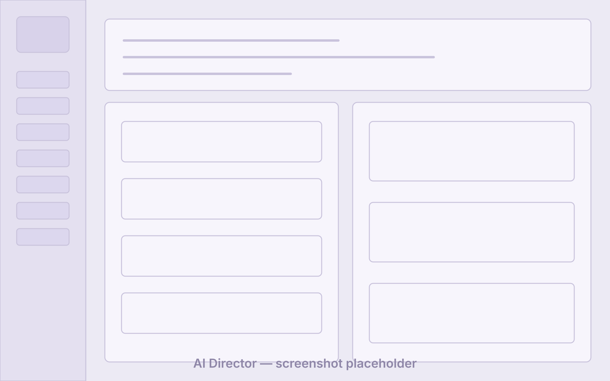
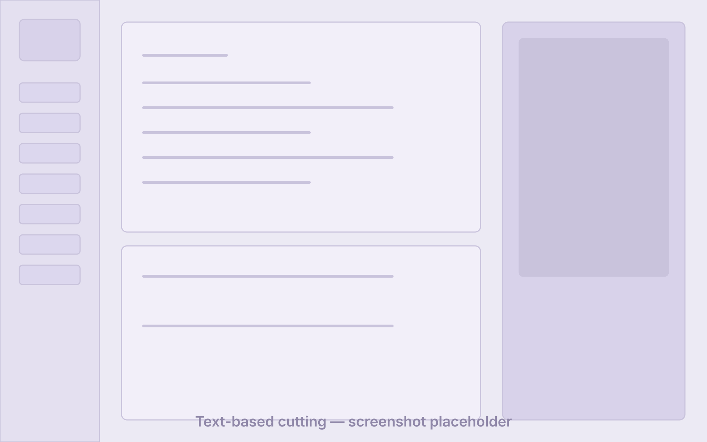
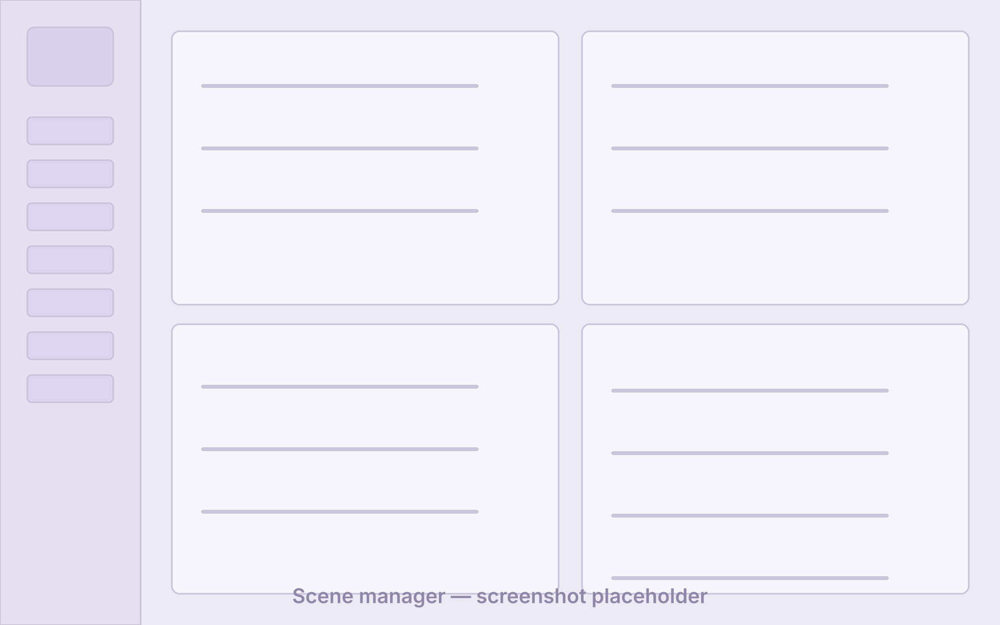
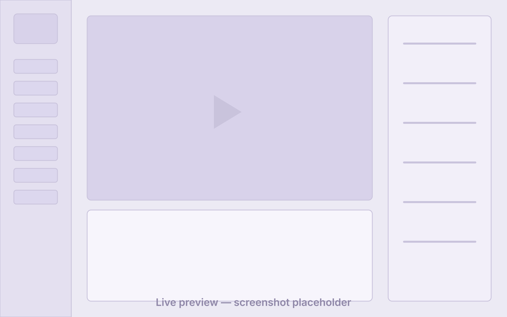
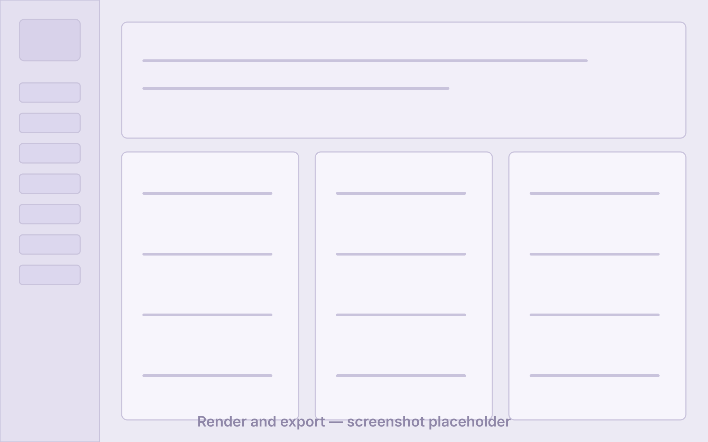

起草脚本
从一个想法、一份大纲或课程提纲开始。AI 导演——你自己的 Claude Code、Codex 或 ChatGPT 会话——把它变成逐场景的脚本，纯文本随时可改。
想法→AI→场景
由 ChatGPT/AI 驱动的视频生成与制作工具，面向教程、产品演示和短视频。
描述你想要的视频，让 AI 导演逐场景起草脚本，按需生成配图与配音，实时预览时间线，一键渲染出 MP4——全部在一个桌面应用里完成。
基础剪辑永久免费 · 当前版本 v0.1.2
产品一览





工作流
从一个想法、一份大纲或课程提纲开始。AI 导演——你自己的 Claude Code、Codex 或 ChatGPT 会话——把它变成逐场景的脚本，纯文本随时可改。
用自己的 ChatGPT 账号生成配图，用 Edge TTS 合成解说配音；也可以导入录好的素材，靠编辑转写文稿完成粗剪。
脚本按空行拆成场景。逐场景选择模板、设置解说词与时长、挂上素材属性，实时预览里即时生效。
一键把项目送进 Remotion 渲染器和 FFmpeg，输出 H.264/AAC 的 MP4，配音字幕就位，直接可发布。
核心能力
应用把自己的剪辑工具通过 MCP 暴露给你正在用的 AI 编程智能体——本机的 Claude Code、Codex，或通过 OpenAI MCP 隧道接入的 ChatGPT 会话。智能体可以起草脚本、调整场景、触发配音和配图生成；但它只能拿到视频工具，拿不到 shell，任何写入操作都要等你批准。
导入口播或演示录像，转写成文稿，然后靠删词、删停顿来剪片。预览实时跳过被删片段；导出走 FFmpeg 精确剪切，每个接缝都有短音频淡入淡出。
脚本按空行拆分场景。每个场景有模板、解说词、时长和素材属性，用卡片管理，通过内置 Remotion 播放器实时预览。
解说词用 Edge TTS 语音合成，逐场景试听，最终混入成片。声音克隆的集成点已预留，后续接入。
场景配图通过你自己的 ChatGPT/Codex 登录调用 GPT Image 生成——不用另买 API key——并自动裁剪为 16:9、9:16 或 1:1。
项目、媒体和渲染结果都保存在你的磁盘上。导出为 Remotion + FFmpeg 的 H.264/AAC MP4——没有锁定，不需要迁出任何云素材库。
技术构成
AI 功能走你已有的账号：应用驱动本机的 Claude Code 或 Codex，或通过 OpenAI 的 MCP 隧道接入你的 ChatGPT 登录。模型用量由你的服务商直接向你的账号计费——Video Creator 不转售任何 AI 额度。
价格
¥0 永久
无需购买，无需付款
¥39 / 月（约 $5.99）
按月订阅
¥299 / 年（约 $49）
比月付约省 36%
下单、开票与退款由 WebClaw 商店处理——国内微信支付，国际银行卡（Creem）；价格与套餐详情以商店商品页为准。AI 模型用量不包含在内：由你自己的账号承担。
路线图
AI 导演、场景管理、Remotion 实时预览、Edge TTS 配音、MP4 渲染导出。
转写录好的视频，编辑文稿完成剪辑，导出干净的 MP4。
通过 Codex OAuth 登录调用 GPT Image，无需 API key，按场景自动裁剪。
目前渲染流水线依赖本机 Node.js 18+ 侧车进程，安装包应当开箱即用。
随成片一起导出 SRT/ASS 字幕，以及更多场景模板。
场景编辑器内的素材库搜索，以及已预留集成点的 F5-TTS 声音克隆。
方向性描述，不构成承诺，也刻意不写日期。事项会调整、合并或取消。
常见问题
需要。AI 功能驱动的是你已有的智能体和账号：本机的 Claude Code 或 Codex，或你的 ChatGPT 登录。模型用量由服务商直接向你的账号计费——Video Creator 不包含也不转售 AI 额度。
目前不能，我们宁可把话说清楚。Video Creator 用场景模板、生成配图、导入素材、文字和配音来组装视频。AI 生成视频片段在探索路线图上，不在当前产品里。
标准的 H.264/AAC MP4，由 Remotion 和 FFmpeg 渲染。文字剪辑的导出同样是 MP4。所有文件都落在你指定的本地目录里。
macOS、Windows 或 Linux。渲染流水线目前通过本机 Node.js 侧车运行，需要安装 Node.js 18+，安装包正在改为自包含。语音识别在配置了 OpenAI 兼容接口或本地 whisper.cpp 模型时效果最好，且始终可以退回到静音检测。
免费版无需购买：AI 导演、AI 一键清理、通过你自己的 AI 账号生成配图、基础剪辑，以及 720p 带水印导出均可使用，限个人非商用。Pro 会员在 WebClaw 商店按月或按年订阅，解锁最高 4K 无水印导出和商用授权。你的项目和已导出视频始终留在你的磁盘上。
在你自己的电脑上。项目、媒体和渲染结果都是本地文件。AI 功能只发送你批准的内容——一段提示词、一节脚本——并且直达你自己的服务商账号。
不是。WebClaw Video Creator 是专有桌面软件。预编译安装包发布在 GitHub Releases，问题反馈也在 GitHub。
开始使用
下载应用，接上你已经在用的 AI 账号，今天就渲染出第一部场景式视频。
最新版本 v0.1.2 · macOS · Windows · Linux